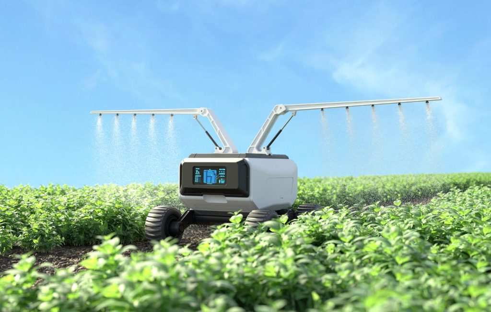
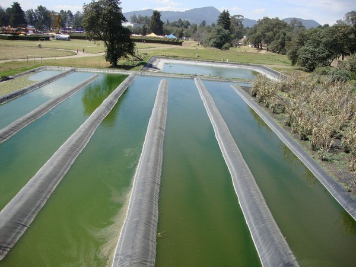
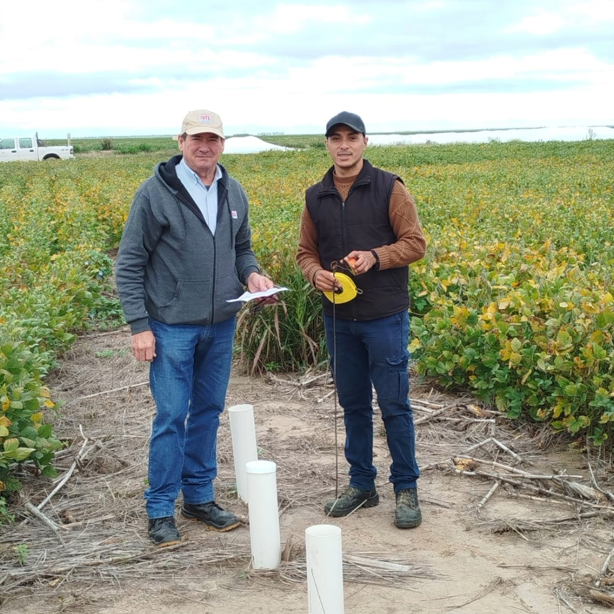

1. Cosecha de Lluvia Automatizada | |
|---|---|
|  |
Diseñamos e instalamos módulos de recolección de agua de lluvia conectados a sensores de robótica educativa. Estos sistemas filtran el agua de forma segura y automatizan el riego de huertas comunitarias y el abastecimiento de sanitarios, reduciendo drásticamente el consumo de agua de red. |
Programa Guardianes del Agua
En BioImpact impulsamos la protección de los recursos hídricos mediante soluciones tecnológicas y comunitarias. Conocé nuestras 3 líneas de acción:
2. Humedales Artificiales (Biofiltros) | |
|---|---|
|  |
Implementamos biofiltros basados en la naturaleza utilizando plantas palustres y piedras volcánicas. Este sistema biológico permite depurar las aguas grises (de bachas y lavaderos) para reutilizarlas de manera segura en el mantenimiento de espacios verdes, evitando la contaminación de las napas subterráneas. |
3. Monitoreo Comunitario de Napas | |
|---|---|
|  |
Capacitamos a vecinos y estudiantes en el uso de kits de medición ambiental para controlar la salud del agua local. Aprenden a registrar el pH, la presencia de metales pesados y contaminantes, subiendo los datos a una plataforma abierta para mapear el estado del agua en tiempo real. |